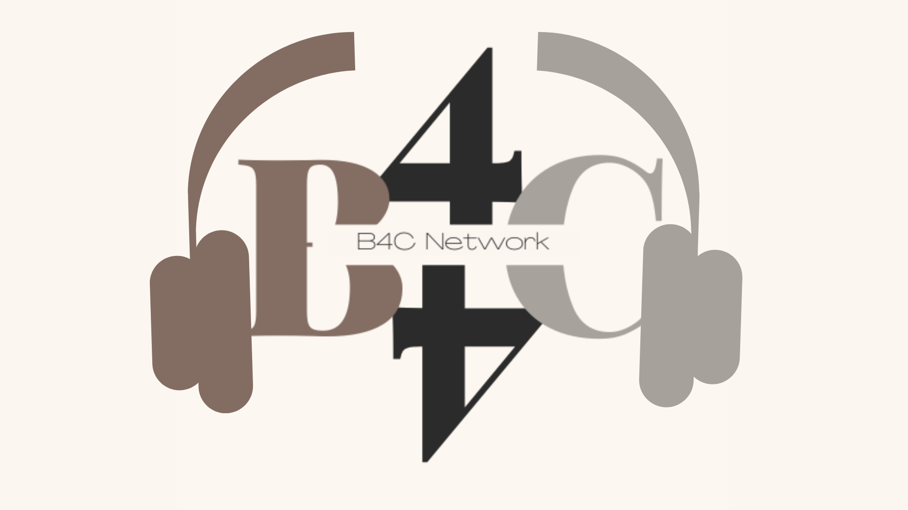

☰ OPEN
I. Summary of Stream
The stream started exactly at the given time of 3:30 P.M. The streamers followed the flow of the stream by introducing the speakers and then breaking down given topic such as: How teen-parent relationship are affected by TikTok addiction, How social media affects people's relationships, Possible social media sites that people tend to become addicted to, How TikTok can become addictive, How Tiktok addiction can ruin a person's relationships, How TikTok addiction can ruin a teens relationship with their relationship, and of course the Q&A. The stream has gained a lot of viewers during the live stream, hitting over 81 views, which gave the streamer a lot of interactions with the viewers as they gave their thoughts about the topic on the comment box. The stream went well, and as a first time streamer, the stream had gone above the expectations, despite having minor issues on some members microphones, the speakers saved the stream by jumping onto each other's topic sharing thoughts as if they were talking casually, which made the stream entertaining as they are not only speaking to each other but also to the viewers.
II. Section Two Title
The stream flowed smoothly, everyone was speaking confidently and they were clear enough for the audience to understand what they were saying although there were some mistakes such as an unexpected switching to Tagalog by one speaker (though just a single word slipped in) and another struggling to get their point across. But, despite the mistakes that were made, most of the hosts were able to improvise making the livestream a success. Most of us were also able to get our point and the information we have gathered through our research to the viewers, which also allowed us to get interactions with the viewers when it came to entertaining their questions about any issues that had to do with TikTok addiction. Overall, the stream went great in terms of content, specifically getting the information across and how we were able to entertain our viewers by the end of the stream.
III. Section Three Title
After a complete review of our stream, not only did we see some strengths but also areas of opportunity. Areas of opportunities in terms of stream layout design, video/audio quality, and engagement of the viewers. First off, we had a problem with the chat box display. Not all messages could fit into the chat box and there were issues with the chroma key such as the other colors blending in when they are not supposed to. This can be viewed as a distraction instead of a good design layout. Second, the video/audio was good enough but there are scenes where parts of an audio from the person speaking are not heard which makes for viewers to not hear them properly. The video quality is already viewable but it can be improved as the quality is 720p but it can be further improved to at least 1080p or possibly even 4k. The Internet speed can greatly affect the stream quality as there are some scenes where the stream freezes or is reduced down to 360p, so having an improvement on it can greatly boost the stream quality. Lastly, during our stream, the only engagement we had with the viewers was during the Q&A part. The engagement improvement may be necessary, as the stream’s viewership may be affected since the boredom of a viewer may result in them leaving. Finding ways to interact or make the stream more fun for the viewers would be something that could be improved.
IV. Section Four Title
During our stream we had a total of 81 views, most of which were very interactive. They would add their insights and ask a lot of questions during the Q&A of our stream. The questions and inputs of our viewers really allowed us to dive deeper into the topic and answer questions that were relevant to the viewers. Things like how they can help a family member who deals with TikTok addiction, how to fix the relationship of the teenager with their parent, or how they can deal with certain situations that include TikTok addiction. The questions of the viewers challenged our knowledge of the topic and to share what we have learned and researched to help the viewers who asked or to at least give our suggestion on their issue. Being able to do this allowed us to accomplish one of the goals of our research which is to help teenagers overcome their challenges with TikTok addiction whether it be the individual themselves or someone in their life.
Although our high viewer interaction was in the Q&A, the earlier stages of our stream barely had any viewer interaction and may have left most bored and affected the experience for the viewers.
V. Section Five Title
During our stream we had high viewership because we sent our YouTube link to the people we know and we posted every now and then. Doing those things allowed us to be able to gain more viewers and catch more attention from people who may be interested in our stream or topic. Posting every now and then or posting updates on our stream allowed us to increase the reach of our promotion and to catch more people to join our stream. We also sent the link to our YouTube stream to people we know so that they could watch our stream.
Views During Stream
| Views |
Impressions |
Impressions click-through rate |
Average View Duration |
| 81 |
405 |
7.2% |
1:50 |
Traffic Source
| |
Views |
Watch Time (Hours) |
Average View Duration |
| Total |
81 |
2.5 |
1:50 |
| Channel pages |
23 (28.4%) |
0.4 (15.0%) |
0:58 |
| Other YouTube features |
20 (24.7%) |
1.1 (43.1%) |
3:11 |
| Browse features |
14 (17.3%) |
0.9 (35.1%) |
3:43 |
| Direct or unknown |
12 (14.8%) |
0.0 (1.9%) |
0:13 |
| YouTube search |
9 (11.1%) |
0.1 (4.5%) |
0:44 |
| External |
3 (3.7%) |
0.0 (0.5%) |
0:13 |
Audience Viewership
| Gender |
Views |
Average View Duration |
Average percentage viewed |
Watch time (hours) |
| Female |
47.6% |
0:07 |
0.2% |
10.8% |
| Male |
52.4% |
0:56 |
1.7% |
89.3% |
Subscription Status During Stream
| Subscription Status |
Views |
Watch time (hours) |
Average View Duration |
| Total |
81 |
2.5 |
1:50 |
| Not Suscribed |
60 (74.1%) |
1.9 (74%) |
1:49 |
| Suscribed |
21 (25.9%) |
0.6 (26%) |
1:50 |
FIND US IN

|

|
B4C Network Youtube |
B4C Network Instagram |
TEAM
Klyde Cagas
ap.klyde.cagas@apecschools.edu.ph
Lance Timothy Catindig
ap.lancetimothy.catinding@apecschools.edu.ph
Rodaenna Jhodel Cruz
ap.rodaennajhodel.cruz@apecschools.edu.ph
Trisha Allaine Bernardo
ap.trishaallaine.bernardo@apecschools.edu.ph
Janica Catbagan
ap.janica.catbagan@apecschools.edu.ph
Marie Jane Nuada
ap.mariejane.nuada@apecschools.edu.ph